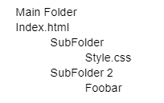

Setting up the website to look a little nicer.
Created a Git repo to host the files so I can access them from anywhere.
Figuring out a base template CSS for the website.
Learning a lot about HTML and CSS. Copy and pasted the entire index.html to the milestones one and it looks completely different…
I learned something
Say we have a folder structure like so
If you try to reference Index.html from the Style.css file while it is in the subfolder, it won’t be able to.
However to fix it, I just need to put a / infront of the index I am trying to reference as a relative path. I am totally confused as to why it would not work. I can access the milestones page from the home page, but not the other way around. I think I’m going to have to dedicate some time learning HTML & CSS.
I think it would be a cool idea to have a timeline on the left hand side showing you where you are within the year, but then also only load up the last 7 posts from the week. Yeah… I feel overwhelmed at this point. Just need to break it up into smaller chunks.